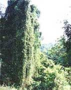

Introduction
New Zealand's rainforests are recognised internationally as unique examples of the ancient forests of the super continent of Gwondaland. The remote Gwondaland wilderness park in New Zealand's south island is the setting for this unique travel opportunity. Only 5 hours drive from Dunedin

Fiordland
Fiordland is a mountainous region with an immense diversity of climates and ecosystems. It has 20 active volcanoes. The Stunning landscape encompasses a panorama of volcanoes, forested mountains, lowland jungles, and rolling savanas. On any day you can expect an encounter a wide range of dinosaurs including:
- Allosaurus
- Patosaurus
- Brachiosaurus
- Brontosaurus
- Triceratops
Schedules
The 2018 schedule is listed below. Dates and availabilities are subject to change. For the most up-to-date information, call Reservations Department at (800) 544-7233. To register for the Jurassic Jungle Adventure, click here for the Contacts page.
| Seasons | Dates |
|---|---|
| Winter | 7 to 10 June |
| Spring | 15 to 18 October |
| Summer | 10 to 13 January |
| Autumn | 25 to 28 April |
Costs
$1878 per person, for 3 days, 2 nights. Trip is limited to SIX persons. The price to Fiordland includes everything you need while with us, including all food, camping gear, and weapons.